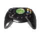

Jogos que me marcaram (e que eu recomendo que você também jogue!)
# Sonic The Hedgehog CD

Ah, Sonic CD... Considerado medíocre por uns, ótimo por outros e considerado uma obra-prima por mim.
Esse jogo é extremamente marcante para mim por uma série de fatores, entre eles o fato desse ter sido o primeiro jogo que eu comprei de verdade, gostei e zerei (mais de três vezes, aliás).
É um jogo com uma trilha sonora (OST) que divide opiniões- a minha trilha sonora favorita, particularmente, é a japonesa/europeia, pois ela combina muito mais com a ambientação do jogo no geral do que a trilha sonora americana mesmo- mesmo assim, ambas as versões são ótimas.
Quando puder, jogue isto.
Download das versões de PC e XBLA